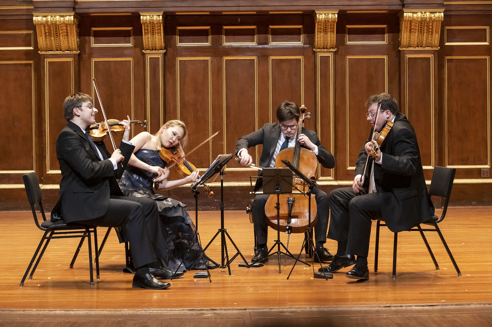

Music
Events
Archives
Opinion
About
Subscribe to Our Newsletter
Photo Gallery
Behind the scenes of music production with AI
Boston Symphony Orchestra at Carnegie Hall
Hillary Hahn performs Tchaikovsky's Violin Concerto
San Diego Symphony at the Rady Shell

New England Conservatory String Quartet
The orchestra Musici de Montréal
Carnegie Hall
Singapore Symphony Orchestra performs in New York